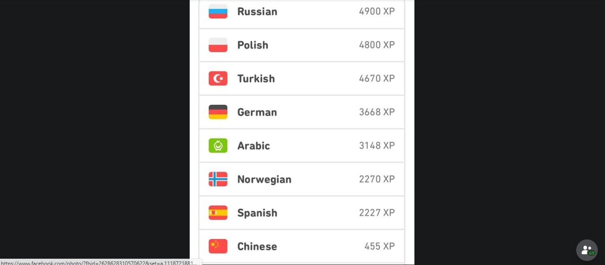
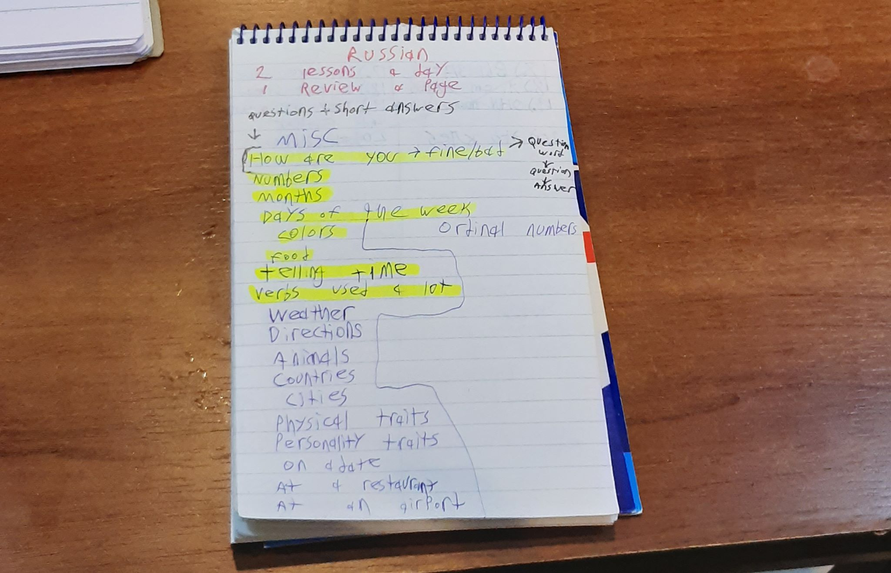
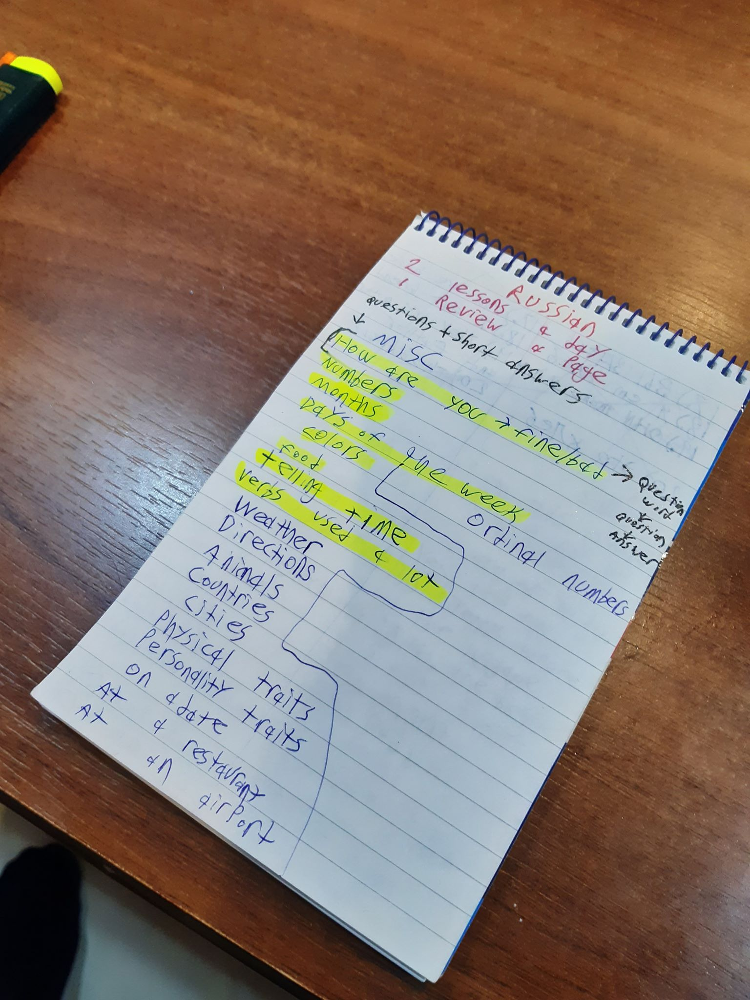
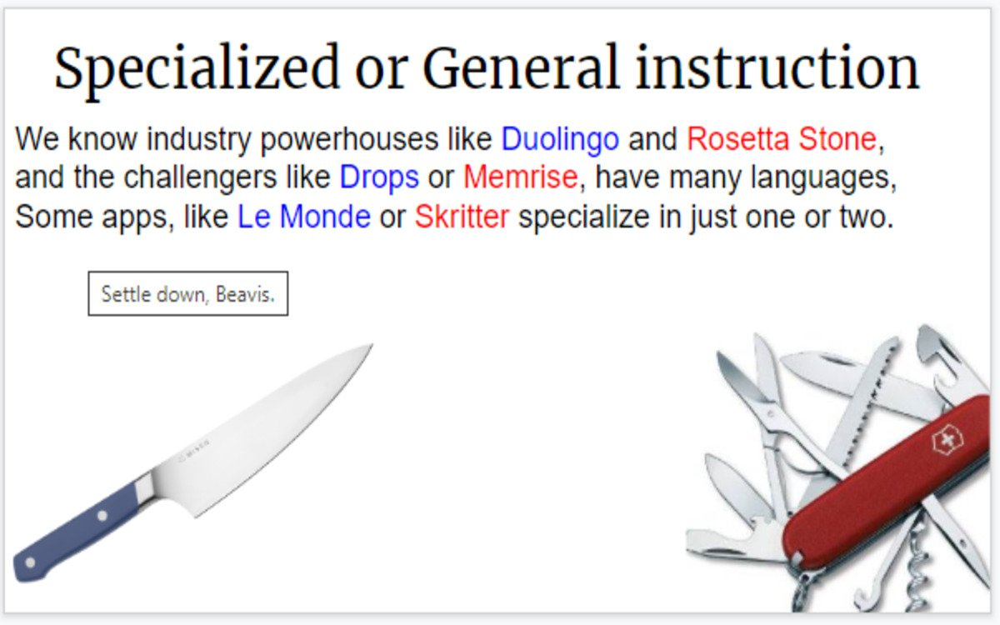
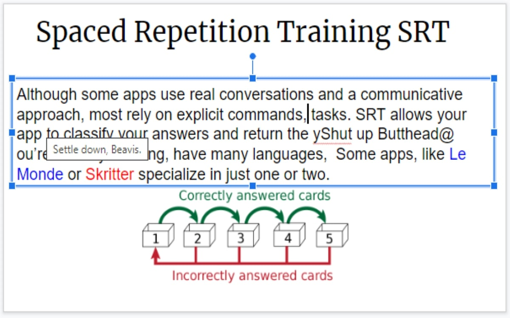
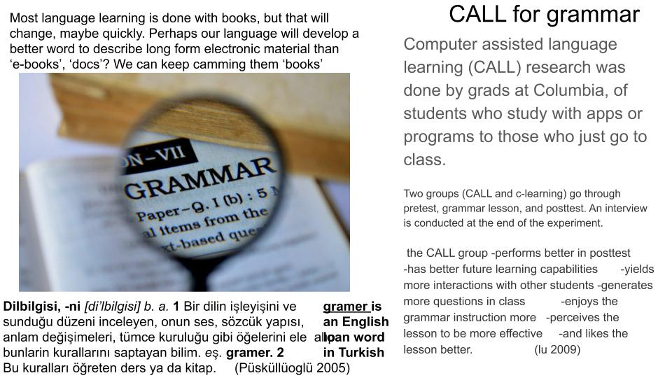

<!DOCTYPE html>
<html>
<head>
      <title>Self-teaching strategy # 1</title>

<style>
#myDiv {
  border: 3px solid #FF0000;
  margin-top: 75px;
}
</style>
</head>
<body>

    <form name="contact" action="https://formspree.io/mknqjaeg" method="POST">

        <div align="right">

            <input type="text" size="30" value="Enter your email here for Languapps updates">

            <input type="hidden" name="Language" value="English">

            <br><br>

        </div>

    </form>

</body>

</html> 
      <h1>An App (or 2) on the Nomadic Path/i/ note: editor seeks more language learning testimonials</i> </h2>
Hi, My name is Sam German. I'll introduce myself, answering some questions about my language acquisition then, then tell
how I learn language and hopefully some of those practical ways to learn language can be yours. At the end follow the link to a review of Duolingo, or check out my social
media links. 
<br/><ul><li>Who I am:  I am an English professor at King Saud University in Saudi Arabia. I also write poetry and fan fiction and have been living abroad for 6 years.
 My Duolingo logs <a href="https://languapps.com/reviews/SamESL"></a>
<li>What I need language for: Not only teaching English but also transitioning into a more self-sufficient digital nomad style, so I need language for traveling. I also find it
  useful to learn languages for teaching English as it can be a good way to understand what students are going through and what techniques you can use to help them. Learning a
  language (even at an elementary level) can also help you understand their language and what issues they might have with English. 
<li>What languages I’ve studied: German (conversational) Norwegian (conversational) Turkish (conversational), Russian (currently studying), Polish (basic knowledge) Arabic (limited
  knowledge), Spanish (limited knowledge), Romani (limited knowledge), Chinese (just checked it out), and Hungarian (just checked it out).
  
</ul><br/>Current daily schedule/methods: 

1) I do 1 duolingo lesson a day and keep doing the same lesson until it is level 5. As I am doing the lesson I have a notepad and write down phrases/words that I don’t know.
  I write them down in both English and Russian. I highlight the new words in the sentence in both English and Russian so I can find them easily if I need them again. The notepad is on the left and the same notepad is on the right.
  
      
2.) I have a list of topics I use for learning new vocabulary. In the same notebook with duolingo I have a topic and then on that page I have vocabulary words related to that topic. I translate one word a day and these words are later put into one of the other apps that will be talked about later. It is a flash card app where you can create your own flash card lessons. 
The vocabulary topic list is on the right:
     A vocabulary section. This one is “seafood” 
You may notice that there is a different color of pen used at times. This is also done during the duolingo lessons and this is just to differentiate between days. Every day I change the pen so I know how much I learned each day. 
3.) I use study blue (also known as blue cards) to study the vocabulary and phrases from the notebook. Each week I study the new content, the content from the last week and then cycle in from the materials list. In simpler terms – I study using three different flash card lessons. 
4.) The last thing I do is that I do one tiny card lesson. This is another vocabulary app. In this one you learn a lesson and often type the words in both English and the foreign language. I do one new lesson and do that same lesson for an entire week. Each day I also do the quiz for completed sections or review a lesson where the gold bar has shrunk down. 
<insert pic>Here’s a look at a course section and you can see the golden bars. They shrink each day that goes by without you reviewing them. These are the golden bars I mentioned in part four of my daily routine.
      Summary about the schedule/methods: 

Now that you know my schedule, we’ll take a closer look at the apps. Before I do that, I would like to say that my schedule and methods have changed over the years of studying and they will continue to change. Find a schedule that suits you. If it’s too hard then make it easier, if it’s too easy then make it harder. I recommend focusing on phrases and vocabulary, while also getting a good handle on sentence structure/question structure. I would advise that you don’t focus too heavily on grammar. Get used to speaking and listening to the language first. After you are good at that, if you like you can go back and really break down the grammar. Another useful hint is that you should find out your learning type. I learn a lot by reading, writing and creating. Basically, I am a visual/kinesthetic learner. You may be a different learner so my methods my not work for you. In closing I will say that for all learners it is important to do these things: A.) practice consistently. B.) Build a good vocabulary base C.) Speak as much as possible 
</script>


</body>
</html>

